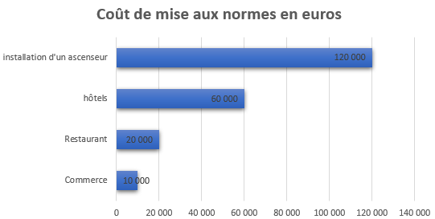
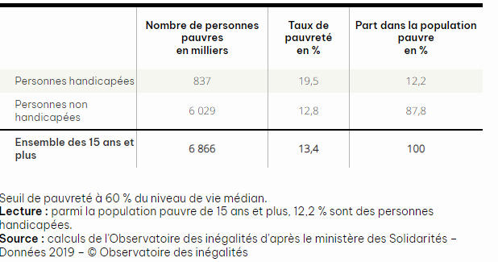
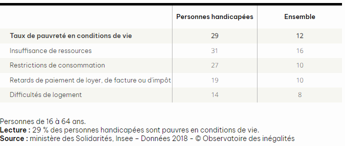

Les difficultés financières rencontrées
Pour un établissement:
Des travaux onéreux
Des coûts qui s'adaptent en fonction de l'handicap. Voici quelques exemples:
Pour un particulier:
Pauvreté selon le handicap
Part de la population qui subit des privations matérielles
En général...
Un milliard d’individus, soit 15 % de la population mondiale, sont porteurs d’un handicap, mais cette proportion est plus élevée dans les pays en développement. La situation socio-économique des personnes handicapées est marquée par des inégalités par rapport au reste de la population : niveau d’instruction moins élevé, moins bon état de santé, taux de chômage et de pauvreté plus élevés. La pauvreté accroît le risque de handicap car elle est souvent associée à des problèmes de malnutrition, d’accès insuffisant à l’éducation et aux services de santé, de conditions de travail dangereuses, d’environnement pollué, et de manque d’accès à une eau propre et à des services d’assainissement. Parallèlement, le handicap aggrave les risques de pauvreté en réduisant les possibilités d’accès à l’éducation, à l’emploi et à un salaire correct, alors que le coût de la vie est plus élevé pour une personne souffrant de handicap.